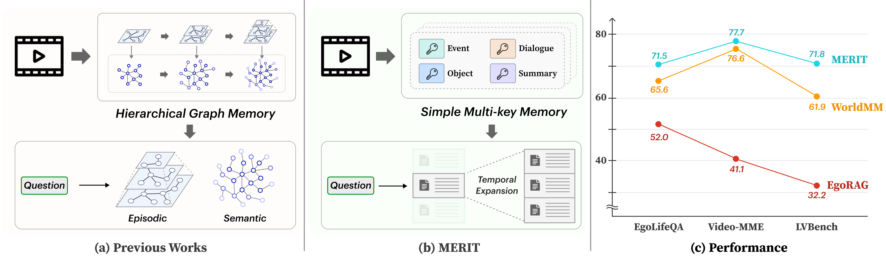
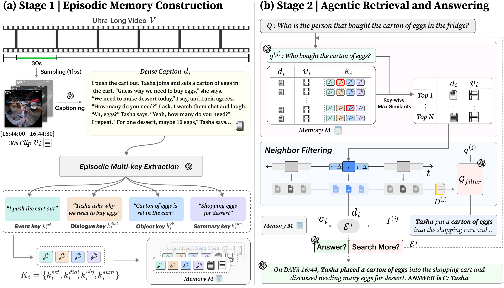
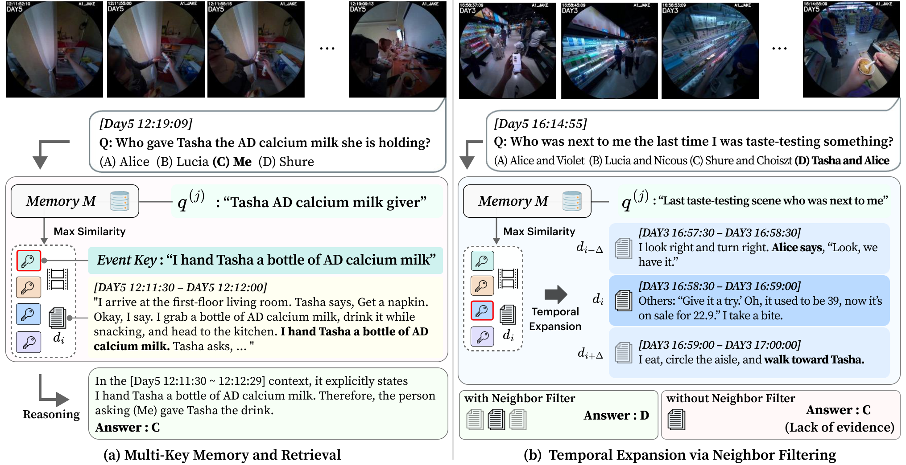

A simple yet effective agentic framework — MERIT — that prioritizes high-recall retrieval and defers semantic composition to inference time.
1 Yonsei University 2 Adobe Research
† Co-corresponding authors

MERIT = Multi-key Episodic Retrieval with Inference-time Temporal expansion.
When videos extend from hours to days, directly processing them end-to-end becomes impractical for current Multi-modal Large Language Models (MLLMs). This ultra-long setting necessitates a two-stage paradigm: query-agnostic memory construction followed by retrieval-based inference. Prior work invests in complex memory construction to pre-model high-level relations in videos, despite not knowing the downstream query at build time. We instead prioritize high-recall retrievability during memory building, and defer query-specific, high-level relation composition to inference time. To this end, we propose MERIT, a simple yet effective agentic framework for ultra-long video understanding. First, we formulate an episodic multi-key representation that enables precise retrieval of fine-grained memories through a simple key-matching mechanism. Second, we introduce a neighbor filtering mechanism to capture broader semantic context without the massive computational overhead of global memory construction, by expanding the temporal scope exclusively around the retrieved segments at inference time. MERIT achieves state-of-the-art performance across three long-video benchmarks: EgoLifeQA, LVBench, and Video-MME (Long).
A minimalist memory-based agentic pipeline: lightweight episodic indexing, then query-driven temporal expansion on demand.

Each minimal segment is matched from diverse perspectives via four decoupled keys.
Observable physical actions and interactions between entities.
Spoken content, exact words, or commands from the audio track.
Items handled, requested, or moved, along with state transitions.
A compact keyword-style abstraction of the clip's core narrative.
Instead of hierarchical or graph structures, MERIT attaches multiple complementary keys to each fine-grained 30s segment. Clip relevance is the maximum cosine similarity over its keys — letting every clip match through its best-aligned aspect for high-recall retrieval.
When a clip is retrieved, its temporally adjacent neighbors (±Δ) are attached on demand — the simplest graph over the timeline. A query-aware filter then distills only the relevant information, reconstructing coherent context without pre-computed hierarchies.
MERIT establishes new SOTA across ultra-long and hour-long video QA — with a far simpler, cheaper memory pipeline.
| Model | EntityLog | EventRecall | HabitInsight | RelationMap | TaskMaster | Avg |
|---|---|---|---|---|---|---|
| MLLMs (Uniform Sampling) | ||||||
| Qwen3-VL-8B | 35.2 | 30.2 | 39.3 | 46.4 | 46.0 | 38.6 |
| Gemini 2.5 Pro | 43.2 | 40.5 | 41.0 | 55.2 | 52.4 | 46.4 |
| GPT-5 | 47.2 | 42.1 | 47.5 | 53.6 | 55.6 | 48.6 |
| Hierarchical Memory Based | ||||||
| EgoRAG (GPT-5) | 40.0 | 56.3 | 62.3 | 54.4 | 52.4 | 52.0 |
| Ego-R1 (3B) | 51.2 | 53.2 | 63.9 | 50.4 | 50.8 | 53.0 |
| Graph Memory Based | ||||||
| LightRAG (GPT-5) | 40.8 | 48.4 | 67.2 | 50.4 | 44.4 | 48.8 |
| HippoRAG (GPT-5) | 48.8 | 60.3 | 70.5 | 60.8 | 66.7 | 59.6 |
| Video-RAG (GPT-5) | 49.6 | 56.3 | 67.2 | 55.2 | 54.0 | 55.4 |
| HippoMM (GPT-5) | 45.6 | 53.2 | 70.5 | 55.2 | 58.7 | 54.6 |
| M3-Agent (7B) | 44.4 | 54.8 | 62.3 | 56.8 | 54.0 | 53.5 |
| EGAgent (Gemini 2.5 Pro) | 54.4 | 57.1 | 60.3 | 62.4 | 74.6 | 57.5 |
| WorldMM (Qwen3-VL-8B) | 49.6 | 56.4 | 63.9 | 58.4 | 58.7 | 56.4 |
| WorldMM (GPT-5) | 62.4 | 64.3 | 75.4 | 62.4 | 71.4 | 65.6 |
| Ours | ||||||
| MERIT (Qwen3-VL-8B) | 43.2 | 54.0 | 67.2 | 53.6 | 65.1 | 54.2 |
| MERIT (Gemini 2.5 Pro) | 60.8 | 61.1 | 65.6 | 65.6 | 73.0 | 64.2 |
| MERIT (GPT-5) | 67.2 | 70.6 | 73.8 | 74.4 | 71.4 | 71.2 |
| Model | LVBench | Video-MME (L) |
|---|---|---|
| MLLMs (Uniform Sampling) | ||
| Gemini 2.5 Pro | 57.0 | 55.7 |
| GPT-5 | 60.4 | 74.3 |
| Hierarchical Memory Based | ||
| EgoRAG (GPT-5) | 32.2 | 41.1 |
| Ego-R1 (3B) | 34.1 | 42.7 |
| Graph Memory Based | ||
| LightRAG (GPT-5) | 30.4 | 46.6 |
| HippoRAG (GPT-5) | 54.0 | 52.1 |
| Video-RAG (GPT-5) | 33.1 | 55.4 |
| HippoMM (GPT-5) | 38.2 | 41.6 |
| M3-Agent (7B) | 49.3 | 55.3 |
| EGAgent (Gemini 2.5 Pro) | – | 74.1 |
| WorldMM (GPT-5) | 61.9 | 76.6 |
| Ours | ||
| MERIT (Gemini 2.5 Pro) | – | 76.3 |
| MERIT (GPT-5) | 71.8 | 77.7 |
MERIT uses the simplest memory key structure yet attains the highest hit rate and accuracy — with an 8.4× reduction in input tokens and 8.6× in output tokens versus WorldMM.
On EgoLifeQA: precise multi-key matching localizes the right moment, and neighbor filtering supplies the surrounding context relational queries need.

Please cite MERIT if you find this work useful. (Final entry will be updated with proceedings info.)
@inproceedings{choi2026merit,
title = {Keep It Simple: Multi-Key Episodic Memory Retrieval
for Ultra-Long Video Understanding},
author = {Choi, Yeeun and Yoo, Youngbeom and Lee, Joon-Young
and Kang, Hyolim and Kim, Seon Joo},
booktitle = {European Conference on Computer Vision (ECCV)},
year = {2026}
}